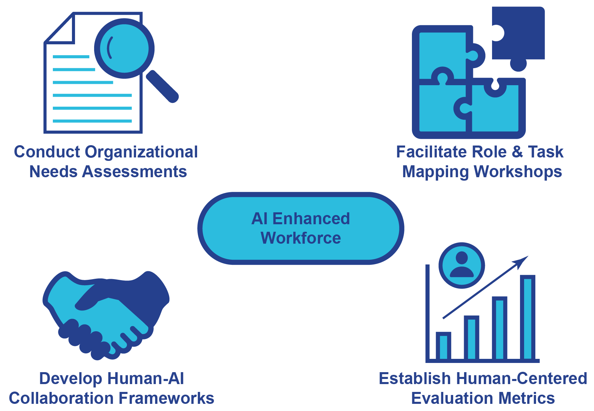

class="particle-compact">
Welcome to C Fjord
At C Fjord, I believe in bridging the gaps that stand between today's workplaces and tomorrow's possibilities. My company name, C Fjord, is a direct reflection of this mission, inspired by the natural fjords - deep, clear water gaps carved between towering mountains.
In the rapidly evolving landscape of business, I see novel technology and existing workplaces as those two towering mountains. The challenge for many organizations isn't just adopting new tools, but understanding how to seamlessly integrate them with human capabilities and processes.
3 Core Missions
Design AI That Works With People, Not Around Them
We follow a proven 4-step process to help organizations design AI technologies that enhance human capabilities and drive more effective outcomes.
-
Understand Human Needs First
-
Co-Design Technology With the Workforce
-
Create Processes for Transparency and Feedback
-
Iteratively Refine and Improve AI to Meet Human Needs
AI That Teams With Your Organization
Creating collaborative systems that enhance workforce capabilities, drive organizational efficiency, and deliver targeted business improvements
Bridge Humans and AI to Create AI Enhanced Workforces
We incorporate and perform 4 independent workplace interventions to plan, establish, and evaluate the use of AI technology.
Conduct Organizational Needs Assessments
Interview stakeholders, map workflows, and analyze current pain points to identify where AI could assist or enhance human efforts.
Facilitate Role & Task Mapping Workshops
Work with teams to distinguish which tasks are best suited for humans (e.g., empathy, judgment) vs. AI (e.g., data processing, pattern recognition).
Develop Human-AI Collaboration Frameworks
Design interaction models that define how humans and AI systems will communicate, make decisions, and share responsibility.
Establish Human-Centered Evaluation Metrics
Measure success not only by efficiency, but also by user trust, satisfaction, equity, and long-term adaptability.

Train People to Use AI to Make Their Work More Effective and Their Lives Better.
We've developed a four-phase training framework made up of sequential—yet standalone—programs designed to meet your organization wherever you are on your AI journey. Whether you're just getting started or refining advanced systems, our approach scales with your needs.
-
Educate Workforces on AI Technologies
Providing accessible knowledge about AI capabilities, limitations, and applications relevant to specific industries and roles.
-
Identify Collaborative Workflows Between Humans and AI
Mapping processes where human strengths and machine capabilities can be optimally paired for maximum effectiveness.
-
Co-Create Tailored Human-AI Collaborations
Developing customized implementation strategies that match specific work contexts and individual needs.
-
Support and Monitor Ongoing Adaptation
Providing continuous guidance as AI evolves, ensuring technology remains a tool for meaningful improvement in both professional and personal spheres.
AI Training
Ecosystem
Ecosystem
Educate
Identify
Co-Create
Support